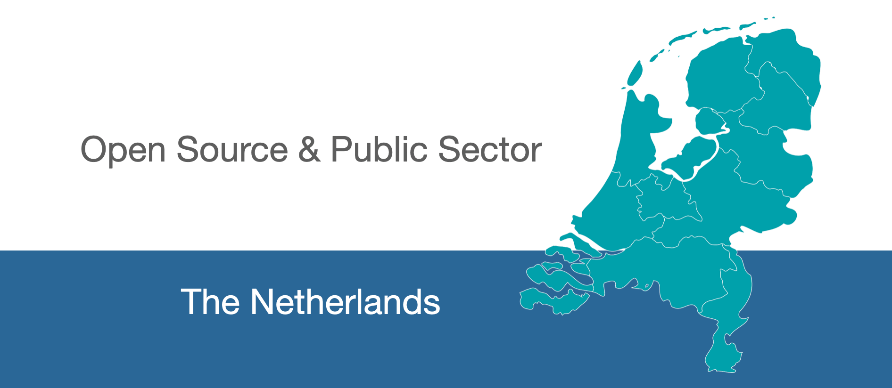

Open source & Dutch public sector
Open source gains popularity in the public sector of the Netherlands. This is a list of profiles on open source platforms in use by organizations in the Dutch public sector.

Organisations
Ministries
High governmental organisation headed by a minister
- Ministerie van Algemene Zaken
- Ministerie van Binnenlandse Zaken en Koninkrijksrelaties
- Ministerie van Economische Zaken
- Ministerie van Infrastructuur en Milieu
- Ministerie van Volksgezondheid, Welzijn en Sport
Provinces
Administrative division within The Netherlands
Municipalities
Judiciary
Emergency services
Transport, Land, and Water Management
- Rijkswaterstaat
- Dutch address data by the land registry (BAG by the Kadaster)
Data and statistics
Research Institutes
- DANS-KNAW
- Huygens ING
- KNAW Digital Humanities Lab
- KNAW Humanities Cluster
- Netherlands eScience Center
- Netherlands Institute of Ecology (NIOO-KNAW)
- Rijksinstituut voor Volksgezondheid en Milieu (RIVM)
- TNO
Libraries
Universities
- Erasmus Universiteit Rotterdam
- TU Delft (GitLab, self-hosted)
- TU Eindhoven (GitLab, self-hosted)
- Groningen University
- Maastricht University
- Leiden University
- Radboud Universiteit
- University of Amsterdam
- University of Twente
- Universiteit Utrecht
- Wageningen University & Research (GitLab, self-hosted)
- Geo-scripting
- [Production Ecology & Resource Conservation](https://github.com/wageningen
- Vrij Universiteit Amsterdam
University Medical Centers
University medical centers are hospitals with a close relationship between the medical faculty and the hospital.
- Erasmus Medical Center
- LUMC
- LUMC
- LUMC GitLab (GitLab, self-hosted)
- UMC Utrecht
- Radboud UMC
- UMC Groningen
- VUMC
- AMC
University of Applied Sciences
- Haagse Hogeschool
- Hogeschool Rotterdam
- Hogeschool Utrecht
- Hogeschool Zeeland
- Hogeschool der Kunsten Den Haag
Contributing
Your contributions are always welcome!
Everyone with a Github account can add the details of missing institutes. No git skills required. It's super easy!
- Navigate to this link.
- Add the link.
- Use the format
* [institution-name](http://example.com/) - Add a section if needed (don't forget the description and Table of Contents).
- Use the format
- Create a Pull Request.
- No need to make an issue first.
- Make sure the PR title is in the format of
Add institution-name.
- Submit Pull Request
About
Open software and open data is important for a transparent and efficient public sector. Many organizations in the public sector have open source activities. An example is the Dutch COVID-19 Notification App CoronaMelder by the Ministry of Health, Welfare and Sport.
The PublicSectorNL project aims to make the accounts and projects of the Dutch public sector easily findable. Findability is the key to reuse and collaboration.
The project is initiated and maintained by Jonathan de Bruin, Wouter van Bijsterveld, and Paul van Gent. The list of organizations is published under a CC-BY 4.0 license.
Inspired and technically based on awesome-python (CC-BY 4.0 license).